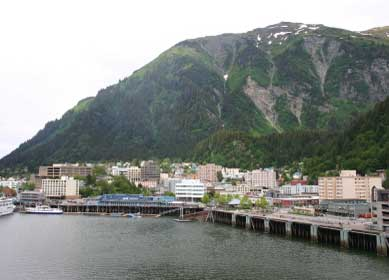

PAUL SENYSZYN/ISTOCKPHOTO
The residents of Juneau, Alaska, recently went through a crash course in energy conservation after an avalance cut off transmission lines that supply hydropwer. The city was able to reduce its electricity use by 40 percent through numerous efforts.